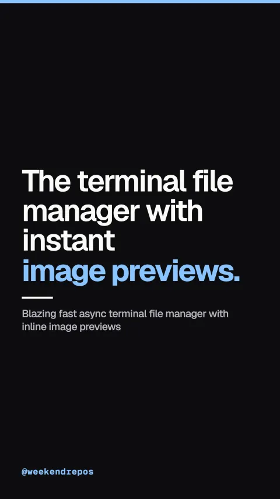

sxyazi/yazi
Blazing fast async terminal file manager with inline image previews

The terminal file manager with instant image previews.
Terminal file managers are usually slow and completely blind.
First, traditional CLI tools leave you guessing what is inside image folders.
traditional CLI tools lack instant visual previews
Yazi renders images directly inside your terminal window.
Yazi renders PNGs, JPEGs, and PDFs directly in your terminal using Kitty and Sixel graphics.
inline graphics preview via Kitty, Sixel, and Uberzug
Built on Tokio async I/O for instant non-blocking speed.
Built on Tokio async I/O: folder sizing and image pre-loading never block your cursor.
async I/O architecture · non-blocking directory sizing
Built-in fuzzy search and instant code syntax highlighting.
It integrates ripgrep fuzzy search and instant code syntax highlighting out of the box.
fzf fuzzy search · ripgrep content indexing
Over 40,000 developers switched to this Rust tool.
Open source under MIT, with over forty thousand GitHub stars.
40k stars · Rust · MIT licensed terminal file manager